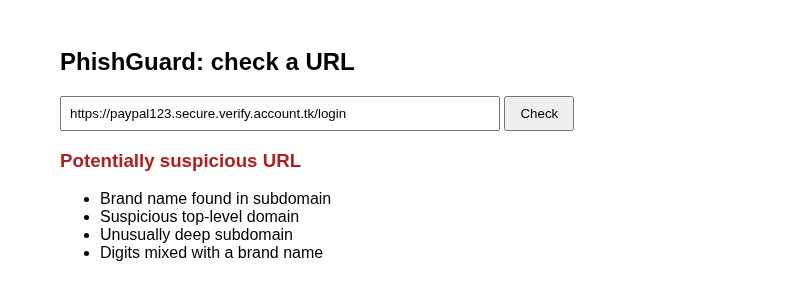
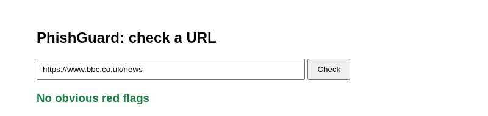

PhishGuard is a web app I made with Python and Flask. You paste in a link and it checks the URL for signs that it could be a phishing link.

It uses a library called tldextract to split the URL into the subdomain, the domain and the ending (like .com). Then it runs checks on each part.
For example, in paypal.secure-login.account.tk the real domain is account.tk. "paypal" is only in the subdomain, which is a common phishing trick. This function checks for that:
def check_brand(result):
subdomain = result.subdomain.lower()
domain = result.domain.lower()
for brand in SUSPICIOUS_BRANDS:
if brand in subdomain and brand != domain:
return True
return FalseWhat it checks for:
.tk, .xyz and .toppaypal123
It only catches the patterns I've written checks for, so a link with no red flags isn't guaranteed to be safe.